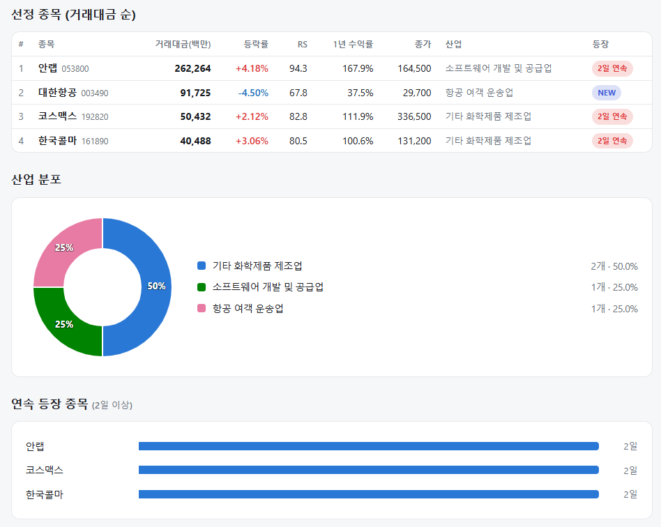
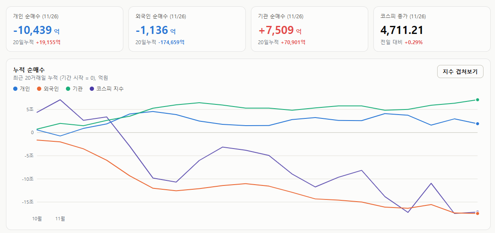
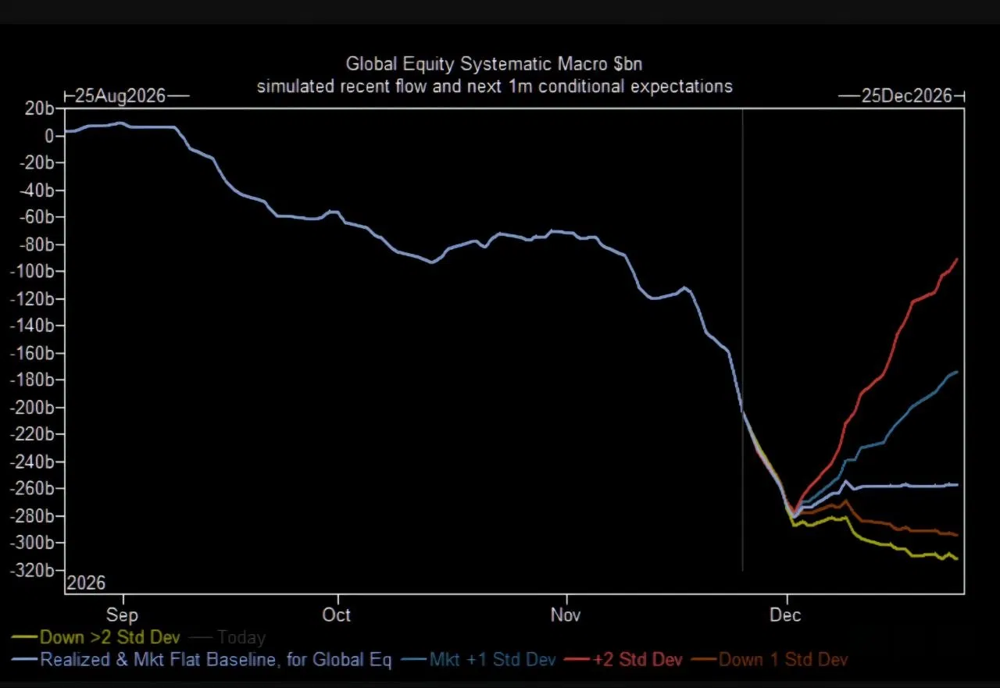
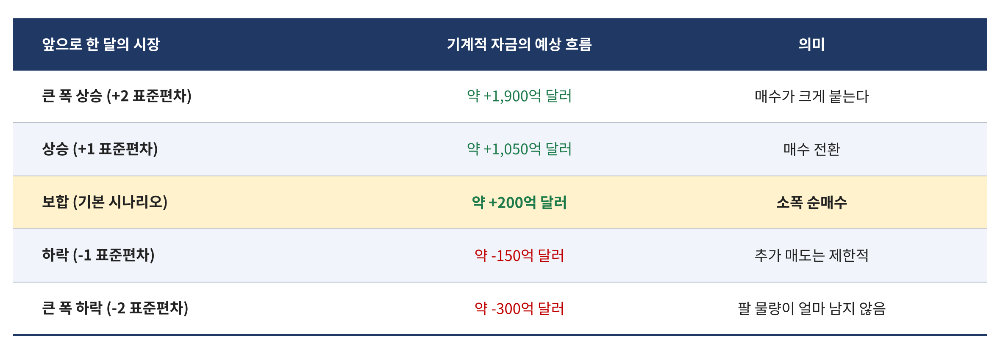

매일의 주도주 정리를 위해 기록합니다.
연속적으로 나온 종목들 또는 상승 후 조정받는 종목 위주로 리서치 해보시면 좋을 것 같습니다.

*오늘의 퀀트픽은 '코스맥스' 입니다. 세부내용은 어제글을 참고하시면 됩니다.
연속종목으로는 안랩(2회), 코스맥스(2회), 한국콜마(2회) 출현했습니다.
#주도섹터
창업투자·금융, IT 부품·통신장비 및 엔터테인먼트
주요 업종 및 종목: 금융(+1.40%), IT(+1.10%), 다각화된금융(+5.66%), 기술하드웨어와장비(+2.43%), 창업투자(+5.92%), 통신장비(+4.03%), 방송과엔터테인먼트(+3.37%), 전자장비와기기(+2.45%), 미래에셋벤처투자(+21.57%), RFHIC(+11.94%), 하이브(+4.97%), 삼성전기(+3.84%), SK스퀘어(+2.68%), SK하이닉스(+2.23%).
분석: 소분류 78개 중 44개가 오른 가운데 금융과 IT가 대분류 상승률 1, 2위를 차지했습니다. 창업투자는 거래대금 2,357억 원에 미래에셋벤처투자와 아주IB투자(+5.95%)가 올랐습니다. IT에서는 전자장비와기기가 거래대금 1조 1,262억 원에 삼성전기 중심으로 매수세가 유입되었고, 통신장비는 거래대금 2,222억 원에 RFHIC가 상승을 이끌었습니다. 거래대금 8조 1,019억 원이 실린 반도체와반도체장비(+1.15%)는 SK하이닉스와 SK스퀘어가 올랐고 삼성전자(+0.35%)는 소폭 상승에 그쳤습니다. 방송과엔터테인먼트는 하이브와 JYP Ent.(+4.62%), 에스엠(+4.05%)이 함께 올랐습니다.
#조정섹터
자동차·부품, 항공·운송, 통신서비스 및 2차전지
주요 업종 및 종목: 경기소비재(-1.20%), 필수소비재(-1.08%), 자동차와부품(-3.28%), 운송(-2.80%), 전기통신서비스(-2.31%), 항공사(-3.57%), 자동차부품(-3.30%), 자동차(-3.26%), 무선통신서비스(-2.89%), 전기제품(-1.51%), 대한항공(-6.16%), 현대모비스(-5.72%), 현대차(-3.90%), 에코프로비엠(-3.80%), SK텔레콤(-3.01%), 기아(-2.40%).
분석: 경기소비재가 대분류 가운데 가장 크게 내렸고, 그 안에서 자동차와부품의 낙폭이 두드러졌습니다. 자동차는 거래대금 2,373억 원에 현대차와 기아가 함께 밀렸고, 자동차부품은 거래대금 2,433억 원에 현대모비스와 한온시스템(-2.72%)으로 매물이 나왔습니다. 항공사는 거래대금 1,856억 원에 대한항공과 아시아나항공(-4.86%)이 크게 내렸습니다. 무선통신서비스는 SK텔레콤과 LG유플러스(-2.68%)가 동반 하락했습니다. 전기제품은 거래대금 4,782억 원에 LG에너지솔루션(-2.11%)과 에코프로비엠이 약세를 보였습니다.
#수급동향

코스피 지수는 +0.29% 상승한 4,711.21로 마감하며 전일 하락에서 상승으로 전환했습니다. 코스닥 지수는 +0.78% 상승한 655.71을 기록하며 역시 상승 전환했습니다.
유가증권시장에서 외국인 투자자는 1,160억 원(누적 수급 집계 기준 -1,136억 원, 20일 누적 -17조 4,659억 원)을 순매도했습니다. 개인은 1조 435억 원(집계 기준 -1조 439억 원, 20일 누적 +1조 9,155억 원)을 순매도했고, 기관은 7,529억 원(집계 기준 +7,509억 원, 20일 누적 +7조 901억 원)을 순매수했습니다.
코스피 시장에서는 상승 종목이 428개, 하락 종목이 441개(보합 43개)로 집계되어 지수 상승에도 하락 종목이 상승 종목보다 조금 많았습니다.
기계의 매도는 끝나가는데, 사람은 아직 사지 않는다
① 기계가 파는 돈이란
시장에는 뉴스를 읽지 않고 규칙대로만 움직이는 자금이 있습니다. 크게 세 종류입니다.
-추세추종 펀드: 가격이 일정 기준선 아래로 내려가면 팔고, 위로 올라가면 삽니다.
-변동성 조절 펀드: 시장이 출렁일수록 주식 비중을 줄이고, 잠잠해지면 늘립니다.
-리스크 패리티: 자산별 위험을 맞추는 방식이라 주식 변동성이 커지면 주식을 덜어냅니다.
이 돈은 내릴 때 팔고 오를 때 사기 때문에 하락을 키웁니다. 대신 규칙이 정해져 있어 얼마나 더 팔 수 있는지를 계산할 수 있습니다. 골드만삭스가 내놓은 추정이 그것입니다.
② 골드만삭스의 숫자

-지난 한 주 동안 이 자금은 전 세계 주식을 약 700억 달러 팔았습니다.
-이번 주에도 800~1,000억 달러의 매도가 더 나올 것으로 추정됩니다.
-기본 시나리오에서 매도는 12월 초에 잦아들고 소폭 순매수로 돌아섭니다.
같은 시기 다른 숫자도 같은 방향입니다. 추세추종 펀드는 앞으로 5거래일간 약 680억 달러를 더 팔 수 있고, 변동성 조절 펀드는 10월 중순 이후 약 4,000억 달러를 줄였습니다. 2025년 관세 충격 이후 가장 크고 빠른 축소입니다. 추세추종 펀드는 이미 S&P500과 나스닥100을 순매도 포지션으로 들고 있습니다.
더 중요한 것은 12월 초 저점 이후의 시나리오입니다.

(표: 앞으로 한 달, 시장 방향별 기계적 자금의 예상 흐름)
시장이 크게 오르면 약 1,900억 달러를 사야 하고, 크게 내려도 더 팔 수 있는 것은 약 300억 달러입니다. 팔 물량은 거의 다 나왔고 살 여력만 남았다는 뜻입니다. 이미 주식을 대부분 덜어낸 자금은 더 팔 것이 없기 때문입니다.
③ 어제 미국장 — 좋게 읽기와 나쁘게 읽기
수요일 미국 시장은 이 그림을 시험했습니다. 악재 두 개가 같은 날 나왔습니다. 14개 교역국을 대상으로 한 관세 제안(한국·대만 등은 최대 25%)과, 3.8%로 3년 내 최고를 기록한 10월 PCE 물가입니다. 12월 금리 인상 확률은 97%를 넘었습니다.
좋게 읽으면 이렇습니다. 나스닥100은 장중 -4.5%까지 밀렸다가 대부분 회복했고, 지난 금요일 저점을 깨지 않았습니다. S&P500 종목 중 407개가 올랐습니다. 지수는 11월에 -5%이지만 평균적인 종목은 -1.5%이고, 동일가중 지수는 신고가까지 3.4% 남았습니다. 나쁜 뉴스에 덜 빠지는 것은 팔 사람이 줄었을 때 나타나는 모습입니다.
나쁘게 읽으면 이렇습니다. 이런 V자 반등은 과거 8번 중 진짜 바닥이 1번뿐이었고, 나머지 7번은 1~2주 뒤 더 낮았습니다. 갭으로 내렸다가 2% 넘게 되돌린 8번 중 7번은 열흘 뒤 더 낮았고 중앙값은 -6.3%였습니다. 추수감사절 전날의 얇은 거래였다는 점도 감안해야 합니다.
④ 사람들은 아직 사지 않는다
기계의 매도가 끝나는 것과 사람이 사기 시작하는 것은 다른 일입니다. 지난주 숏을 모두 청산한 미너비니는 반도체가 상대적 저점을 만들었을 수 있다면서도 "내가 거래하는 자리는 아니다"라고 했습니다. 그와 몇몇 트레이더가 들고 있는 것은 바이오와 제약뿐입니다. 포지션 다섯 개가 전부 숏인 사람도 있고, 자기 펀드를 산 사람도 있습니다. 엇갈리지만 공통점은 하나입니다. 반도체를 사는 사람은 없습니다.
오늘 한국 시장도 같습니다. 외국인은 오전에 샀다가 오후에 팔았습니다. 어제 정리한 신영증권 보고서는 내년 1분기 반등을 비중 축소의 기회로 보라고 했습니다. 기계가 멈춘 자리를 사람이 채워야 가격이 오르는데, 그 사람들이 아직 금리를 보고 있습니다.
추세추종 펀드는 지수가 정해진 선 아래로 내려가면 기계적으로 주식을 줄입니다. 골드만이 계산한 S&P 500의 선은 단기 7,560, 중기 7,527, 장기 7,117입니다. 단기와 중기는 이미 깨졌고, 그래서 팔 물량은 대부분 나왔습니다. 남은 것은 장기선 하나인데, 수요일 종가 7,182.78에서 0.9% 아래입니다. 이 선이 종가로 깨지면 세 신호가 모두 매도로 바뀌어 소폭 매수 전망이 매도로 돌아서고, 반등 때 기계가 되사 주는 힘도 약해집니다.
매도가 줄고 있다는 것은 상승의 방아쇠가 아닙니다. 매도가 멈추면 가격은 덜 내릴 뿐이고, 오르려면 사는 사람이 있어야 합니다. 지금 사람들은 사지 않고 있습니다.
먼저 뛰어들지 않고, 12월초 FOMC에서 인상 폭과 이후 경로에 대한 발언등을 확인하고 매수해도 늦지 않아 보입니다.
오늘 하루도 수고하셨습니다.